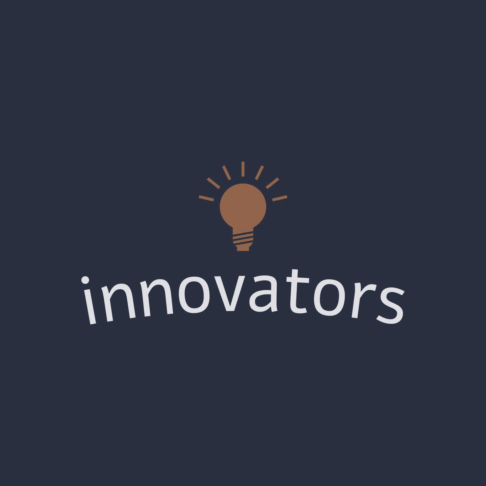

Welcome to our community! All four of our students are enrolled in the Information Systems course, and we collaborate to explore various projects and activities to gain a deeper understanding of information systems. Rauf worked diligently on website design and demonstrated programming skills, and Nuray contributed significantly to her own data collection. organizational skills and attention to detail. We strive to create a learning environment where individual talent contributes to our success as a team and as forward-thinking thinkers.
2, my name is Rauf, I study Electric and Electronic Engineering. I have little workshop at home I am interested in electrics when I was child. I attend several robotics on school days. I also studied at codeacademy and learn how to build website , Its front and back.
I am Nuray Mammadli. Ever since I was a child, I have enjoyed taking things apart to learn how they work. As a first year electrical engineering student, I was very excited to explore this case. My mom used to tease me about my childhood when I played eith electronic things but now she sees it as proof of my love for technology. I want to learn everything about circuits and electronics so I can build cool things. Being a woman in STEM means a lot to me and I hope to inspire others
My name is Shamir Valiyev. I study IT at ADA University. My hobbies are playing basketball football tennis listening to music and sleeping. I love playing with my dog as well. Her name is cookie. she is adorable
My name is Shukur Ismayilov, and I'm studying computer engineering at ADA University. I'm passionate about cycling, playing computer games, practicing martial arts, and researching cars.
3. For our Hour of Code event we went to school number 54. We met with Sahiba khanum the director of school she introduced us with students.We as a group firstly talked about ADA University and what benefits it offers to students. Then we started to teach students to work with codeacademy. Codeacademy teaches students how to think effectively and efficiently and use as less source to get the achievement. While students were working by themselves also our group were helping with problems. Our group explained how to use blocks in correct order if they faced problems. At the end everyone of the students got their certificates.
4. Our project started as a course at our Code Academy Although we started from scratch, we have been using HTML, Java and CSS technologies for a long time to create applications on the Internet. Even though it's down, we test the back end, and we've seen a lot of improvements in the past The front end was well designed and implemented using HTML and added interactivity with CSS and JavaScript. However, the back end was more difficult to install than we expected